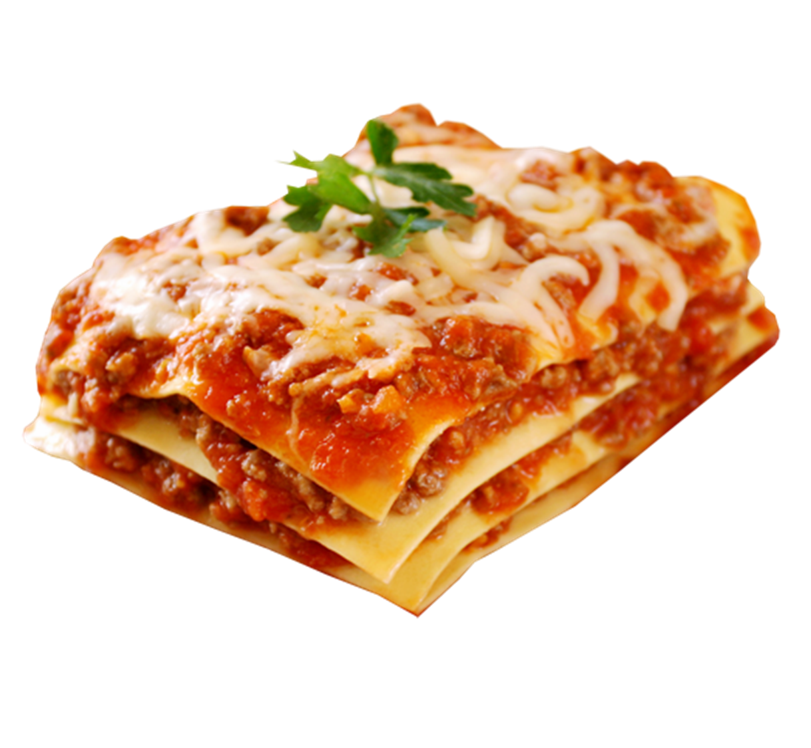

Lasagna Recipe

Description
This will be the simplist yet most tastiest Lasagna recipe I can find
The key is to have the noodles cooked just right and maybe have sausage for that extra kick
Ingredients
- 12 Lasagna noodles
- 4 cups mozerella
- 1/2 cup parm cheese
- 1/2lb Ground Beef
- 1/2lb Italian Sausgae
- 1 diced Onion
- 2 cloves minced garlic
- 36 oz Pasta Sauce
- 2 TBSP Tomato Paste
- 1 tsp Italian Seasoning
- 2 cups Ricotta cheese
- 1/4 cup chopped parsely
- 1 beaten egg
Steps
- Cook Pasta Al dente (or skip if you get fresh lasagna sheets from deli area). Do a
cold rinse and set aside
- Brown Meats,onion and garlic and drain
- Sitr in sauce, paste, seasoning and simmer for 5 minutes
- Combine half of mozerella,parm, and the ricotta, parsely and egg for cheese mixture
- Add 1 cup of meat sauce to the 9x13 pan
- (3x)Top with 3 noodles. Layer with 1/3 of the cheese mix and 1 cup of meat sauce
- Finish with 3 noodles topped with sauce
- Cover with foil and bake for 45 minutes
- Uncover, sprinkle with cheese and bake and additional 15 mins or until brown
- Rest 10 to 15 minutes before cutting